This item will help you build your own a mobile web app or native app via Tumblr API, with the lowest cost.
A mobile Web app is an app that you access via a mobile browser (such as iPhone’s Safari). It is not a static mobile website. It is designed to work like a native app, but it is not accessible via the App Store or Android Marketplace. You pull it up right from the browser.
Deciding whether a native or Web-based app is best for your client comes down to the audience they are trying to reach. Mobile Web apps are a good fit if:
Yes. This is a hybrid mobile applications using AngularJS and Cordova. Buy this item, you have not only a mobile web app but also can build it to a native app to any platform (android, ios, blackberry, etc)
Go to https://www.tumblr.com/register and register an account, then login to tumblr dashboard.
Now you need to get an OAuth Key by go to the URL https://www.tumblr.com/oauth/apps
Click to the button Register Application and complete register form
Next, you will get the key by go to the following url: https://www.tumblr.com/settings/apps
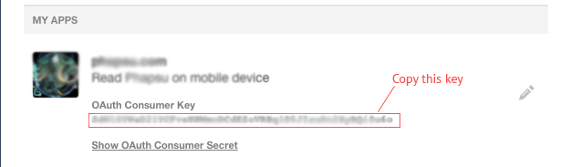
Open the file source_code/www/scripts/tumblrConfig.js and modify following the image below
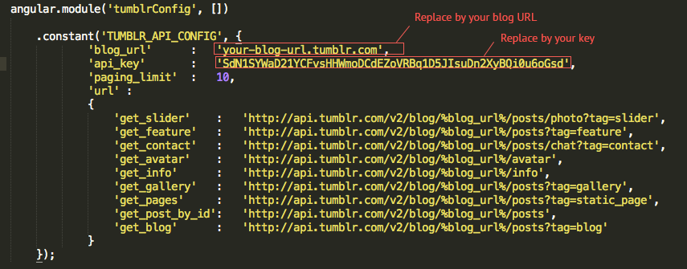
Copy all files in the folder www to your server or your hosting and open in your web browser. If your blog title has been shown, you have config successfully. Please view following image:
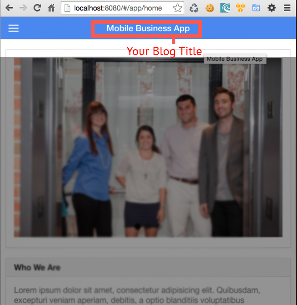
There are 4 type of pages: Home, Blog, Gallery and Static Page
Please take a look my demo page http://demo.phapsu.com/freelance/tumblr/
You will see it has structure as the following image:
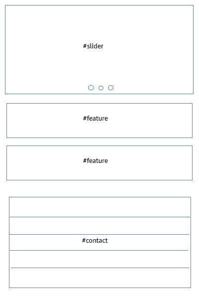
I use the Tumblr hashtag to distribute content in this app. The homepage has 4 posts with 3 tags: one post with #slider tag, 2 posts with #feature tag, and one post with #contact tag.
1. Slider
In Tumblr dashboard, you have 7 types of posts
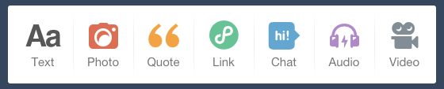
Click to Photo & upload your photos. Then, set this post with #slider tag. Please view the following image
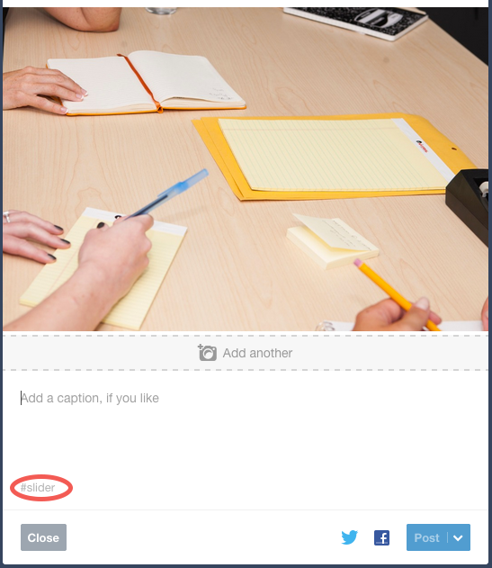
2. Feature
Click the Text post, add your content and #feature tag
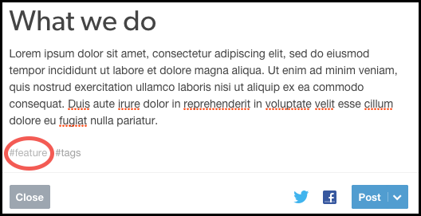
3. Contact
Click the Chat post, add your content and #feature tag
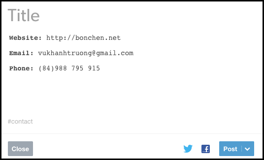
Congratulation, You have finished adding the content for your homepage. Now open your web browser and refresh, you will see the contents that you had just added.
To create Blog page, you just need add post (support all Tumblr's post type) with #blog tag
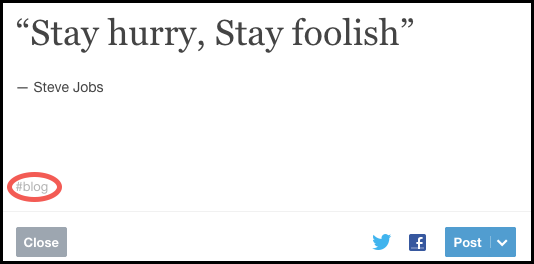
The Blog Menu will not show until your blog have at least one post with #blog tag
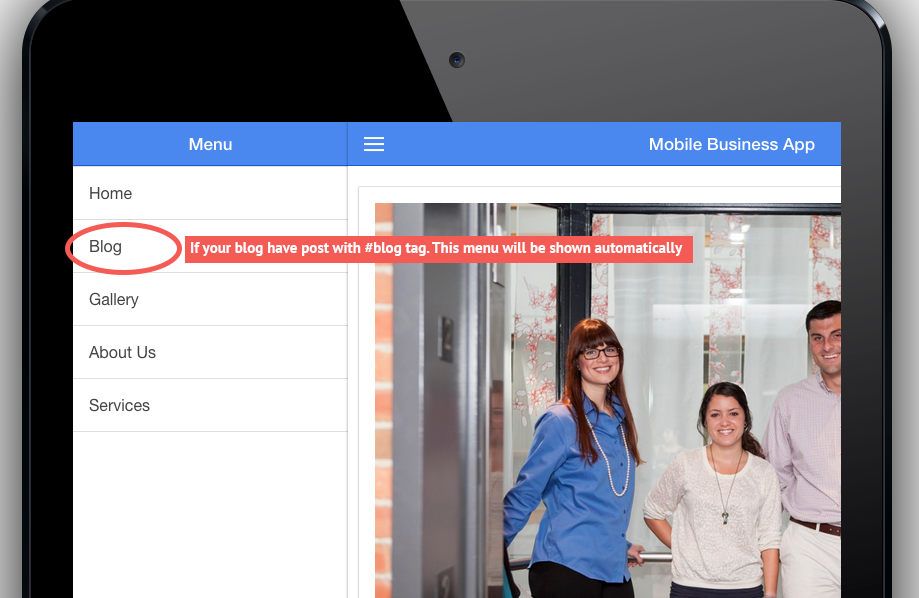
To create Gallery page, you just need add Photo post with #gallery tag
To create static pages, you just need add Text post with #static tag
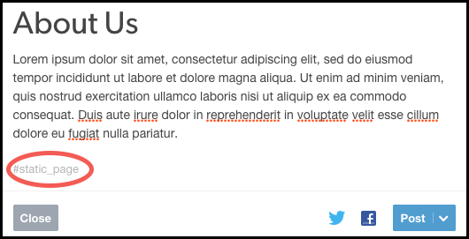
The Static Page Menu will not show until your blog have at least one post with #static_page tag
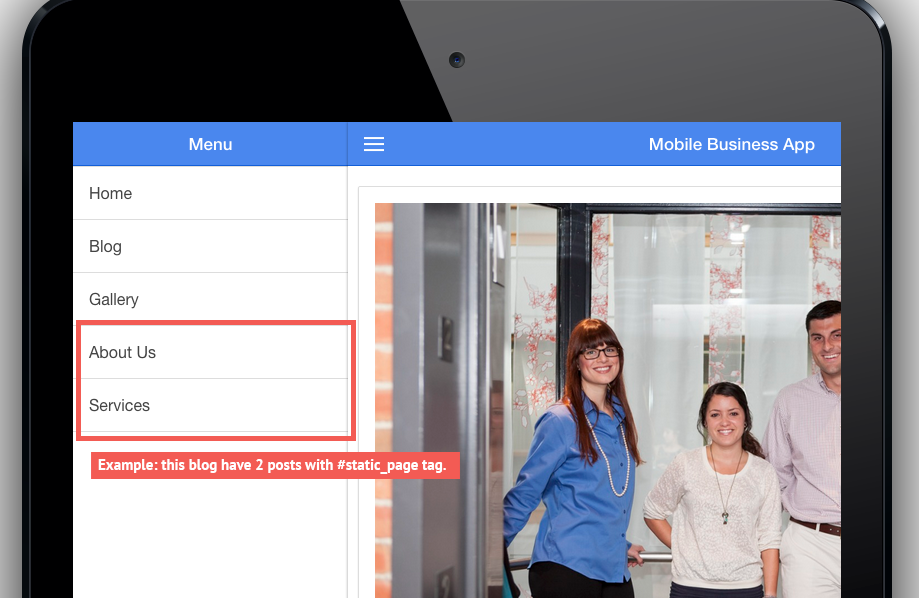
If you want to modify this script or build native app or something else. Please read reference documents: